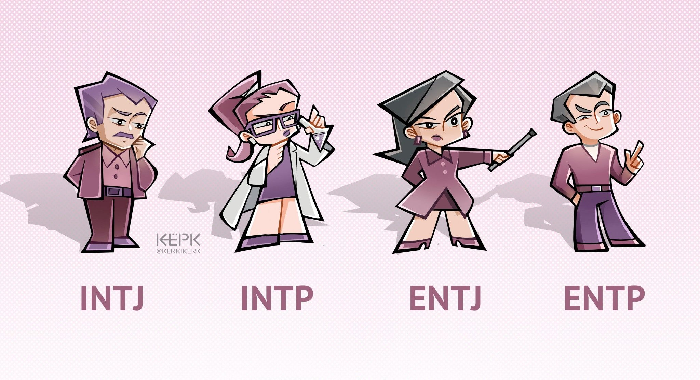

|  | Personalidades Analistas: Tienden a ser audaces y creativos, deconstruyendo y reconstruyendo ideas con gran agilidad mental. Persiguen sus objetivos vigorosamente a pesar de cualquier resistencia que puedan encontrar. |
| Personalidades Diplomaticos: Las personas diplomáticas están buscando constantemente la forma de contribuir positivamente, es por ello que las carreras relacionadas con las ciencias de la salud son las más afines a estas personas. | |
| MBTI | Personalidades Centinelas: Son ordenados y tienen muy claro qué está bien y qué está mal. Se interesan en contribuir para mejorar las condiciones en las que viven las personas a su alrededor mediante la acción y el trabajo en equipo siempre y cuando todos cumplan en su misión. Son proclives a desarrollar una personalidad de liderazgo y no tienen problema en delimitar planes y guiar a los demás. |